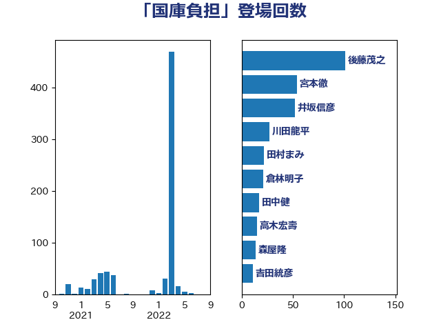

単語「国庫負担」

| 後藤茂之 | 自由民主党 | 101 回 |
| 宮本徹 | 日本共産党 | 54 回 |
| 井坂信彦 | 立憲民主党 | 52 回 |
| 川田龍平 | 立憲民主党 | 27 回 |
| 田村まみ | 国民民主党 | 22 回 |
| 倉林明子 | 日本共産党 | 21 回 |
| 田中健 | 国民民主党 | 17 回 |
| 高木宏壽 | 自由民主党 | 15 回 |
| 森屋隆 | 立憲民主党 | 14 回 |
| 吉田統彦 | 立憲民主党 | 11 回 |
| 田村憲久 | 自由民主党 | 11 回 |
| 山井和則 | 立憲民主党 | 10 回 |
| 菅義偉 | 自由民主党 | 9 回 |
| 早稲田ゆき | 立憲民主党 | 8 回 |
| 田村智子 | 日本共産党 | 8 回 |
| 今枝宗一郎 | 自由民主党 | 7 回 |
| 柚木道義 | 立憲民主党 | 7 回 |
| 福島みずほ | 社会民主党 | 6 回 |
| 仁木博文 | 無所属 | 5 回 |
| 伊藤岳 | 日本共産党 | 5 回 |
| 古賀篤 | 自由民主党 | 5 回 |
| 山田勝彦 | 立憲民主党 | 5 回 |
| 梅村聡 | 日本維新の会 | 5 回 |
| 角田秀穂 | 公明党 | 5 回 |
| 吉良よし子 | 日本共産党 | 3 回 |
| 末松信介 | 自由民主党 | 3 回 |
| 田畑裕明 | 自由民主党 | 3 回 |
| 石田昌宏 | 自由民主党 | 3 回 |
| 落合貴之 | 立憲民主党 | 3 回 |
| 音喜多駿 | 日本維新の会 | 3 回 |
| 中島克仁 | 立憲民主党 | 2 回 |
| 坂本哲志 | 自由民主党 | 2 回 |
| 大口善徳 | 公明党 | 2 回 |
| 大野敬太郎 | 自由民主党 | 2 回 |
| 志位和夫 | 日本共産党 | 2 回 |
| 本田顕子 | 自由民主党 | 2 回 |
| 橋本岳 | 自由民主党 | 2 回 |
| 武田良太 | 自由民主党 | 2 回 |
| 浜口誠 | 国民民主党 | 2 回 |
| 石橋通宏 | 立憲民主党 | 2 回 |
| 義家弘介 | 自由民主党 | 2 回 |
| 萩生田光一 | 自由民主党 | 2 回 |
| 谷田川元 | 立憲民主党 | 2 回 |
| 赤澤亮正 | 自由民主党 | 2 回 |
| 鈴木俊一 | 自由民主党 | 2 回 |
| 阿部知子 | 立憲民主党 | 2 回 |
| こやり隆史 | 自由民主党 | 1 回 |
| 上田英俊 | 自由民主党 | 1 回 |
| 伊藤俊輔 | 立憲民主党 | 1 回 |
| 伊藤渉 | 公明党 | 1 回 |
| 勝目康 | 自由民主党 | 1 回 |
| 勝部賢志 | 立憲民主党 | 1 回 |
| 北側一雄 | 公明党 | 1 回 |
| 吉川元 | 立憲民主党 | 1 回 |
| 塩谷立 | 自由民主党 | 1 回 |
| 小寺裕雄 | 自由民主党 | 1 回 |
| 山添拓 | 日本共産党 | 1 回 |
| 山田宏 | 自由民主党 | 1 回 |
| 岡本三成 | 公明党 | 1 回 |
| 市村浩一郎 | 日本維新の会 | 1 回 |
| 庄子賢一 | 公明党 | 1 回 |
| 打越さく良 | 立憲民主党 | 1 回 |
| 斎藤嘉隆 | 立憲民主党 | 1 回 |
| 杉久武 | 公明党 | 1 回 |
| 水岡俊一 | 立憲民主党 | 1 回 |
| 池下卓 | 日本維新の会 | 1 回 |
| 河西宏一 | 公明党 | 1 回 |
| 浅川義治 | 日本維新の会 | 1 回 |
| 浮島智子 | 公明党 | 1 回 |
| 渡辺創 | 立憲民主党 | 1 回 |
| 玉木雄一郎 | 国民民主党 | 1 回 |
| 田村貴昭 | 日本共産党 | 1 回 |
| 石川香織 | 立憲民主党 | 1 回 |
| 竹谷とし子 | 公明党 | 1 回 |
| 舩後靖彦 | れいわ新選組 | 1 回 |
| 藤丸敏 | 自由民主党 | 1 回 |
| 藤岡隆雄 | 立憲民主党 | 1 回 |
| 西村智奈美 | 立憲民主党 | 1 回 |
| 道下大樹 | 立憲民主党 | 1 回 |
| 鈴木憲和 | 自由民主党 | 1 回 |
| 長妻昭 | 立憲民主党 | 1 回 |
| 高橋千鶴子 | 日本共産党 | 1 回 |
| 鰐淵洋子 | 公明党 | 1 回 |